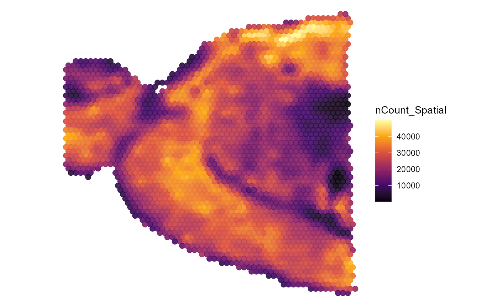
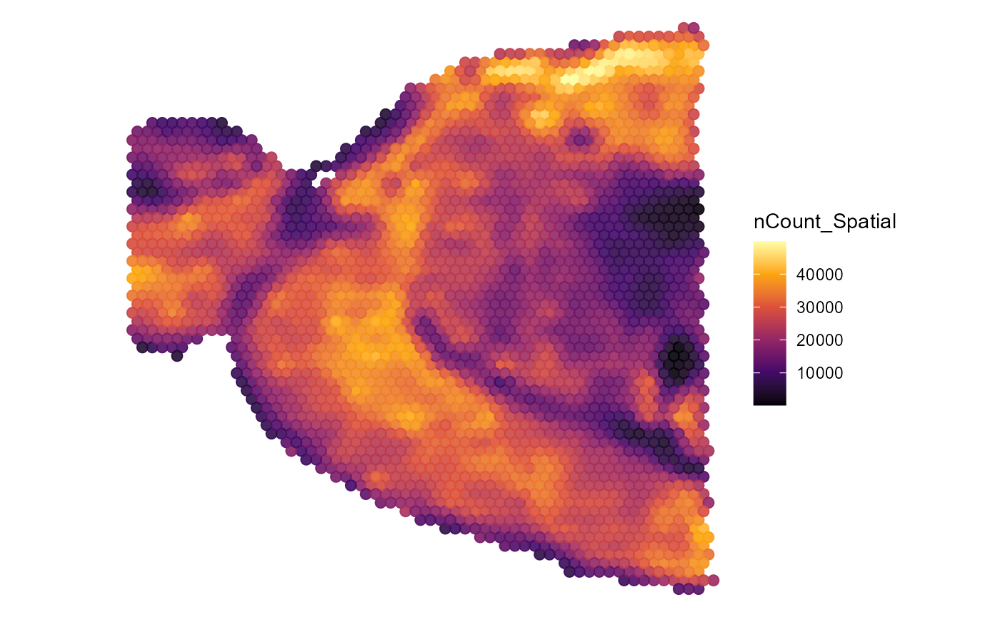

SPATA-Object Set up & Manipulation
spata-v2-object-initiation-and-manipulation.RmdThe center of SPATA2 is an S4-object of class spata2. This vignette explains the basis of it’s structure and more importantly the most basic functions to create one as well as to manipulate it.
1. Create a spata-object
The easiest way to create one from scratch with your data is via the initiateSpataObject_*()functions.
1.1 With a matrix and coordinates
There are two indispensable inputs needed in order to set up a spata-object. As long as you provide those two you can use SPATA2 to analyze and visualize data deriving from all kinds of experiments.
- A matrix in which the rows correspond to the gene names and the columns correspond to the unique identifiers of every distinct location (we refer to these locations as barcode-spots). Every cell of the matrix subsequently corresponds to the expression values. This matrix can either be an unprocessed count matrix or an already processed matrix which we refer to as expression matrix. The example is a 10x10 subset of an already processed matrix.
## AAACAAGTATCTCCCA-1 AAACACCAATAACTGC-1 AAACAGAGCGACTCCT-1
## AL627309.1 0.00000000 1.0000000 0.03219694
## AL669831.2 0.12571837 0.7143180 0.06505426
## AL669831.5 0.07783532 0.8040467 0.14062911
## FAM87B 0.13916475 0.7292328 0.07296636
## LINC00115 0.25666142 0.6883596 0.00000000
## FAM41C 1.00000000 0.6477934 0.13263546
## AL645608.1 0.15857889 0.7022333 0.04904714
## SAMD11 0.13929504 0.6638247 0.17781843
## NOC2L 0.41453276 0.0000000 1.00000000
## KLHL17 0.05927105 0.6688244 0.43051485
## AAACAGCTTTCAGAAG-1 AAACAGGGTCTATATT-1 AAACAGTGTTCCTGGG-1
## AL627309.1 0.00000000 0.5636165 0.8875665
## AL669831.2 0.12651164 0.5663211 0.7204619
## AL669831.5 0.28041277 0.9790490 0.8132117
## FAM87B 0.13134633 0.5841412 0.7210713
## LINC00115 0.03239111 0.0000000 0.2144870
## FAM41C 1.00000000 1.0000000 1.0000000
## AL645608.1 0.12102254 0.5137110 0.7141826
## SAMD11 0.25566425 0.7021117 0.6646854
## NOC2L 0.69096436 0.9859252 0.0000000
## KLHL17 0.32551350 0.6557542 0.2472023
## AAACATTTCCCGGATT-1 AAACCGGGTAGGTACC-1 AAACCGTTCGTCCAGG-1
## AL627309.1 1.0000000 0.02437061 0.6291549
## AL669831.2 0.7785258 0.16050206 0.6618059
## AL669831.5 0.6796621 0.37621856 1.0000000
## FAM87B 0.7926872 0.16628669 0.6805608
## LINC00115 0.2490788 0.00000000 0.5193033
## FAM41C 0.8483957 0.53188622 0.5971984
## AL645608.1 0.7718748 0.14916640 0.6540970
## SAMD11 0.7857686 0.25079273 0.5973341
## NOC2L 0.0000000 1.00000000 0.0000000
## KLHL17 0.5935567 0.22997498 0.6117876
## AAACCTAAGCAGCCGG-1
## AL627309.1 0.6054902
## AL669831.2 0.3943090
## AL669831.5 1.0000000
## FAM87B 0.4356422
## LINC00115 0.0000000
## FAM41C 0.9148817
## AL645608.1 0.3334440
## SAMD11 0.4980708
## NOC2L 0.5031803
## KLHL17 0.4672352- A coordinate data.frame that contains at least a column called barcodes that is identical in it’s content to the column names of the input matrix as well as a x- and a y-column referring to the spatial coordinates of each barcode-spot. (The example below shows a subset that corresponds to the matrix above.)
## barcodes x y
## 1 AAACAAGTATCTCCCA-1 434.76 373.80
## 2 AAACACCAATAACTGC-1 131.76 428.76
## 3 AAACAGAGCGACTCCT-1 407.16 145.20
## 4 AAACAGCTTTCAGAAG-1 96.00 327.00
## 5 AAACAGGGTCTATATT-1 110.40 352.56
## 6 AAACAGTGTTCCTGGG-1 218.64 518.16
## 7 AAACATTTCCCGGATT-1 416.04 443.40
## 8 AAACCGGGTAGGTACC-1 165.36 321.12
## 9 AAACCGTTCGTCCAGG-1 215.88 384.96
## 10 AAACCTAAGCAGCCGG-1 364.80 468.48Depending on whether your input matrix has already undergone processing steps you need to decide whether you want to initiate the spata-object with either initiateSpataObject_CountMtr() or initiateSpataObject_ExprMtr(). As with any other function run ?initiateSpataObject_*() in your console to obtain a detailed report on what is going on in the background and how to manipulate the way your data is read in, processed and stored.
spata_obj <-
initiateSpataObject_CountMtr(
coords_df = example_coords_df, # your coordinate data.frame
count_mtr = example_count_mtr, # a matrix with unprocessed count values
sample_name = "gbm_1",
image = example_image
)
spata_obj <-
initiateSpataObject_ExprMtr(
coords_df = example_coords_df, # your coordinate data.frame
expr_mtr = example_expr_mtr, # a matrix with already processed (e.g. normalized) values
sample_name = "gbm_1",
image = example_image
)1.2 From 10X Visium folders
Behind the scenes initiateSpataObject_10X() loads the necessary data file as well as the histology image from the folder you obtain from 10X Visium. It performs a variety of computations e.g. count normalization, dimensionality reduction, clustering while relying on gold-standard functions of the Seurat-package.
spata_obj <-
initiateSpataObject_10X(
directory_10X = "path/to/a/10Xvisium-folder", # the directory from which to load the data
sample_name = "gbm-275"
)1.3 From example data sets
Throughout this website we work with spata-objects that were created with data sets that we have created on our own as well as with data sets that are freely available as example data sets. To create those yourself use initiateSpataObject_Example(). This function currently relies on the package SeuratData and the mouse brain data set. You can change the input for argument type to either ‘anterior1’ or ‘posterior1’.
# create a spata-object with a data set deriving from mouse cortex
spata_obj_mc <- initiateSpataObject_Examples(type = "anterior1")Spata-objects generated this way are compatible with all functions in SPATA2.
plotSurface(object = spata_obj_mc, color_by = "seurat_clusters", pt_size = 2)
plotSurface(object = spata_obj_mc, color_by = "nCount_Spatial", smooth_span = 0.1, pt_size = 2) 
Figure 1.1 Surface plots of an example data set.
2. Saving and loading a spata-object
As with any other object created in R you can save spata-objects with the function base::saveRDS(). However, SPATA2 provides some functionalities to make working with your objects as convenient as possible. The object itself contains a slot in which you can store the directory under which you want to save it every time you make progress worth saving (after time consuming computations for example). You can use getDirectoryInstructions() to obtain a list of directories that are currently stored in your spata-object. (Click here to see how to work with seurat-objects and cell_data_sets.)
getDirectoryInstructions(object = spata_obj)## $cell_data_set
## [1] "not defined"
##
## $seurat_object
## [1] "not defined"
##
## $spata_object
## [1] "not defined"Use adjustDirectoryInstructions() to adjust the default directory under which the object of interest is supposed to be stored.
# set/change the current default directory
spata_obj <-
adjustDirectoryInstructions(
object = spata_obj,
to = "spata_object",
directory_new = "data/spata-obj-gbm275.RDS", # the directory under which to store the object
)
getDirectoryInstructions(object = spata_obj)If a default directory exists you can save the object without any further input using saveSpataObject().
# quickly save the spata-object under the default directory
saveSpataObject(object = spata_obj)3. Adjust default instructions
R functions come along with arguments who often have a predefined default input. (e.g. the color of points in scatterplots is usually set to black by default and can be changed manually). In SPATA2 the default input for recurring arguments is carried by the spata-object itself. To see what is currently set as the default use printDefaultInstruction() or getDefaultInstructions().
# print what is currently set as the default
printDefaultInstructions(object = spata_obj)## The spata object uses the following as default input for recurring arguments:
## average_genes = FALSE
## binwidth = 1
## clrp = milo
## clrsp = inferno
## colors = #440154FF, #481B6DFF, #46337EFF, #3F4889FF, #365C8DFF, #2E6E8EFF, #277F8EFF, #21908CFF, #1FA187FF...
## complete = TRUE
## display_facets = TRUE
## display_image = FALSE
## display_labels = TRUE
## display_legend = TRUE
## display_points = FALSE
## display_residuals = TRUE
## display_trajectory_parts = FALSE
## display_title = FALSE
## max_adj_pval = 0.05
## method_aggl = ward.D
## method_dist = euclidean
## method_de = wilcox
## method_dr = umap
## method_hclust = complete
## method_ovl = classic
## method_padj = fdr
## method_gs = mean
## n_highest_lfc = 50
## n_lowest_pval = 50
## n_pcs = 10
## normalize = TRUE
## position = fill
## pt_alpha = 0.9
## pt_clr = lightgrey
## pt_clrp = milo
## pt_clrsp = inferno
## pt_fill = black
## pt_shape = 21
## pt_size = 1.8
## relevel = FALSE
## scales = free
## sgmt_clr = black
## sgmt_size = 2.5
## show_colnames = FALSE
## show_rownames = FALSE
## smooth = TRUE
## smooth_clr = red
## smooth_method = loess
## smooth_se = TRUE
## smooth_span = 0.25
## uniform_genes = discard
## verbose = TRUEIf you want, for example, a different color palette for surface plots for a specific project you can set it via adjustDefaultInstructions().
# the default
plotSurface(object = spata_obj, color_by = "seurat_clusters")
# overwrite default by specifying the argument within the function call
plotSurface(object = spata_obj, color_by = "seurat_clusters", pt_clrp = "jco")Figure 3.1 Surface plots before adjusting the default instructions
Change the default setting for the spata-object.
# set new default insructions
spata_obj <- adjustDefaultInstructions(object = spata_obj, pt_clrp = "npg")
# the new default
plotSurface(object = spata_obj, color_by = "seurat_clusters")
# overwrite default by specifying the argument within the function call
plotSurface(object = spata_obj, color_by = "seurat_clusters", pt_clrp = "jco")Figure 3.2 Surface plots after adjusting the default instructions
4. Subset a spata-object
Surface plots like those displayed in Figure 3.1 and Figure 3.2 are scatterplots that display the barcode-spots on which at least one gene count was detected with their x- and y-coordinates. Sometimes technical artifacts render the quality of barcode-spots poorly which might affect the overall quality of your data set as well as downstream analysis results. Take a look at the example below. The surface plot on the left is colored by the total number of gene counts per barcode-spot. Notice the splintered areas at the top and the right margin that seem to feature almost 0 reads. Notice as well that this splintered area affects the overall clustering results.
plotSurface(object = spata_obj2, color_by = "nCount_Spatial", smooth_span = 0.1)
plotSurface(object = spata_obj2, color_by = "seurat_clusters")Figure 4.1 Surface plots of a sample featuring barcode-spots that seem to be rather technical artifacts with close to zero total reads
Although we have a separate tutorial for how to work with spatial segments this chapter covers how to use spatial segmentation to exclude barcode-spots that happen to be rather technical artifacts. Use createSegmentation() to encircle the area that you want to keep.
# segment the "good quality area" as well as the "bad quality area"
spata_obj2 <- createSegmentation(object = spata_obj2)The result could be a segmentation that looks somewhat like this.
# obtain segment names
getSegmentNames(object = spata_obj2)## [1] "good_quality" "bad_quality"
# visualize the segmentation
plotSegmentation(object = spata_obj2,
segment_subset = "good_quality",
encircle = TRUE,
clrp_adjust = c("good_quality" = "forestgreen")
)
plotSegmentation(object = spata_obj2,
segment_subset = "bad_quality",
encircle = FALSE,
clrp_adjust = c("good_quality" = "red")
)Figure 4.2 Surface plots of the drawn segmentation
The function subsetBySegment_*() filters the spata-object by the drawn segmentation and returns a new spata-object that is composed of those barcode-spots that fell into the area encircled by the good_quality-segment. The subsetBy*()-functions extract the relevant data and initiate a new spata-object with it.
# name the segment you want to keep
spata_obj2_subset <- subsetBySegment_CountMtr(object = spata_obj2, segment_name = "good_quality")As displayed by the plots below as well as by the new clustering the technical artifacts have been excluded and are no longer displayed nor do they affect downstream analysis results.
plotSurface(object = spata_obj2_subset, color_by = "nCount_Spatial", smooth_span = 0.1)
plotSurface(object = spata_obj2_subset, color_by = "seurat_clusters")Figure 4.3 Surface plots of the subsetted spata-object
Obviously, there are many other reasons why you would want to subset your sample. subsetByBarcodes_*() lets you subset your spata-object by just the barcode-spots of interest.